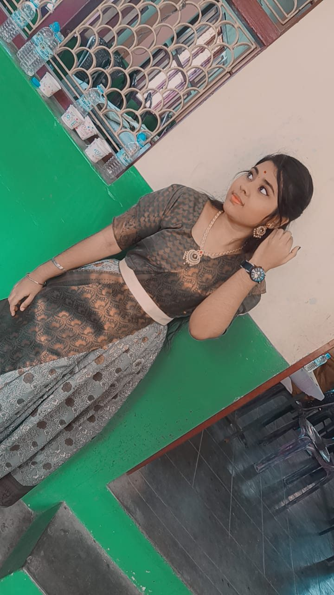

Some Moments Stay With You
I Couldn't Keep It to Myself
You'll probably laugh at me, or even scold me for this... but you know I actually cried while watching these videos. Literally, tears welled up in my eyes, and I don't even know why. It has never happened to me like that before, but this day it just did... The captions in them felt so deeply true to my life, and the exact second I read them, the tears just slipped out.... I'm using this moment to pour my heart out and tell you this too... 🫶🥹
This day, this moment, I just felt a wave of emotions and wanted to let everything out all at once.... Please don't get disturbed or scold me.... Please bear with me and accept it all, and if there is anything wrong, uncomfortable, or out of place in what I've said, done, or am doing, I'm really so sorry, ma.... I just felt to do and say what was in my heart, so I did it and said it, that's all! I didn't mean anything by it intentionally!! :) ✨
✨
